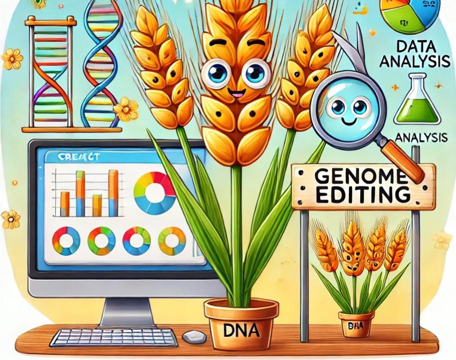

Gurminder Singh
Plant Geneticist & Molecular Biologist
Bridging the gap between genetics and sustainable agriculture through innovative research in host-pathogen interactions.

My Expertise
Host-Pathogen Interaction Studies
Investigating the molecular dialogue between wheat and pathogens to develop better defenses.
Genomics & Bioinformatics
Decoding complex genetic data to unravel plant resistance mechanisms.
Gene Cloning
Exploring genetic blueprints to unlock plant potential.
CRISPR/Cas9 Editing
Precision editing to enhance crop resilience and disease resistance.
Data-Driven Insights
Leveraging computational tools to transform data into actionable insights.
Gurminder Singh
PhD Candidate | Plant Geneticist | Data Enthusiast
Education
PhD in Genomics, Phenomics, and Bioinformatics
North Dakota State University
(2020 - 2025)MS in Plant Pathology
North Dakota State University
(2017 - 2020)BS in Agriculture
Punjab Agricultural University, India
(2013 - 2017)Research Highlights
- QTL and association mapping to identify genetic loci for disease resistance.
- Cloning of Tsc2 gene in wheat to understand tan spot disease.
- CRISPR/Cas9 editing for targeted gene knockout experiments.
Core Skills
CRISPR/Cas9 Gene Editing
Agrobacterium-mediated Transformation
Data Analysis in R & Python
Awards & Achievements
NAPB George Washington Carver Scholar Award
(2024)
NDSU GPB Outstanding Graduate Research Award
(2024)
Gerald O. Mott Meritorious Graduate Student Award
(2023)
Publications
Citations Over the Years
Total Citations: 0
Contact Me
Email: g.singh@ndsu.edu